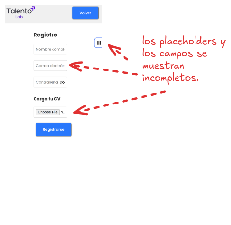
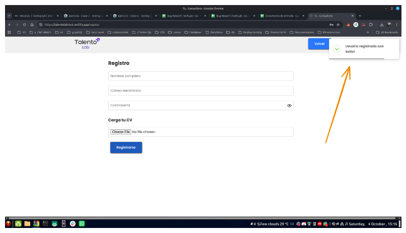
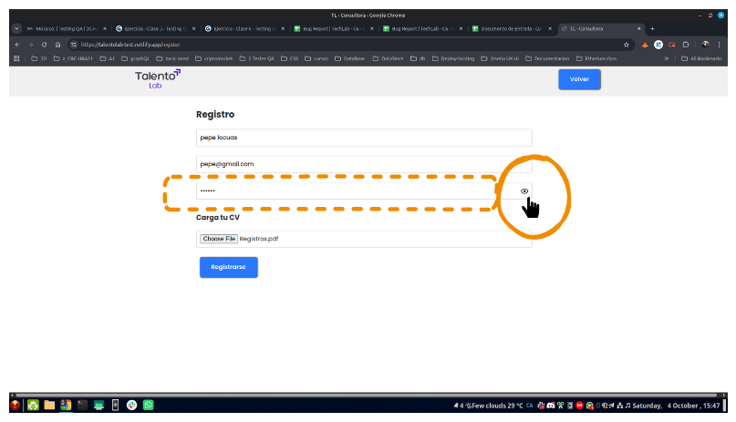
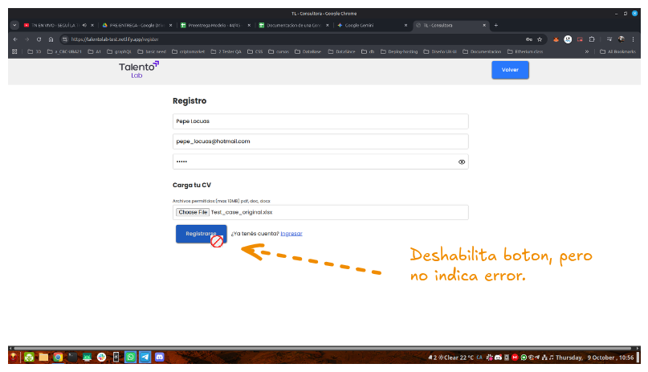
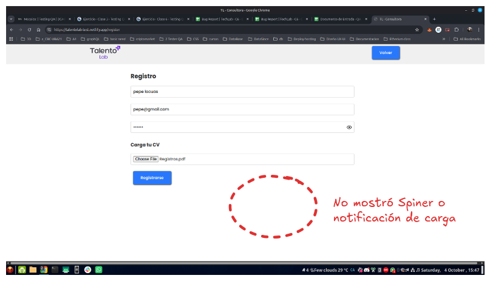
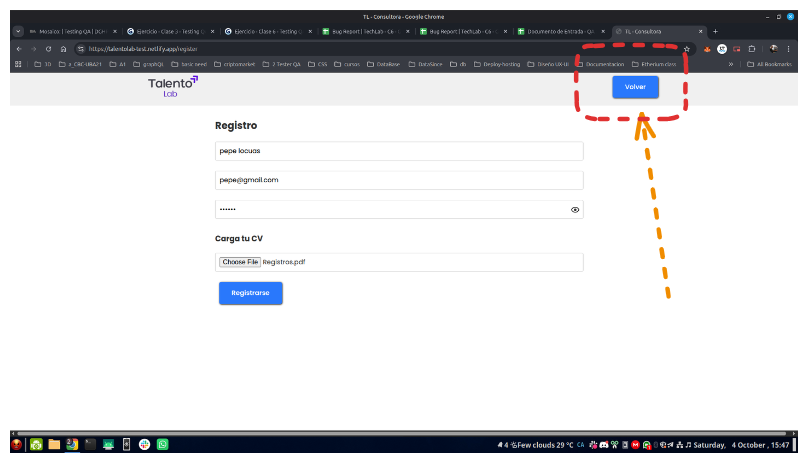

| A | B | C | D | E | F | G | H | I | J | K | L | M | N | O | ||
|---|---|---|---|---|---|---|---|---|---|---|---|---|---|---|---|---|
1 |  | Bug Report | TechLab | ||||||||||||||
2 | ||||||||||||||||
3 | ID | Tipo | Título | Descripción del Problema | Pasos para reproducir | Resultado Esperado | Resultado Obtenido | Severidad | Prioridad | Entorno | Adjunto | |||||
4 | BUG_TC - 01_01 | Defecto | Formulario no es responsivo en móviles/tablets | En pantallas menores a 615 x 800 pixel los campos se aprecia recortados o se pierde la lectura de los placeholder. | - Ir a la página de registro. - cuando pruebas en pantallas menor a 602 px ya se puede empezar a apreciar el problema | Se espera que pueda verse los campos con toda la información correspondiente como el título ara de escritura del campo y poder leer sus placeholder | No es responsive, En pantallas menores a 615 x 800 pixel los campos se aprecia recortados o se pierde la lectura de los placeholder. | Media | Media | Version de la aplicación: 1.0. Sistema operativo: Android 12/ ios 16 Dispositivo: Pixel 7 / iPhone 14 Pro Max | Desde píxel 9 | Desde iphone 14 pro | ||||
5 |  | |||||||||||||||
6 | BUG_TC - 06_02 | Error | Error al Validar email | El sistema no detecta correctamente cuando se ingresa un correo electrónico inválido, permitiendo continuar con datos incorrectos y afectando la calidad de los registros. | 1. Ir a registrate. 2. En el campo "correo" usar un correo con error ej (pepe@@hot.com). 3. llenar otros campos y Adjuntar un archivo válido (.pdf) menor a 5 MB 4. Presionar el botón "Registrarse" | Se espera ver una notificación de error clara al introducir un formato de correo electrónico inválido (ej. "Por favor, ingresa un correo electrónico con un formato válido.") | El sistema mostró un mensaje registro exitoso | Alta | Alta | – Linux Mint 21.3 Cinnamon – Navegadores: Chrome 118.0.5993.90, Firefox 120.0, Microsoft Edge 118.0 (El error persiste en todos) |  | |||||
7 | BUG_TC - 16_03 | Defecto | Funcionalidad de mostrar/ocultar contraseña falla al hacer clic en el icono | La funcionalidad de mostrar/ocultar contraseña no responde correctamente al hacer clic en el icono correspondiente dentro del campo de contraseña, impidiendo visualizar y ocultar nuevamente el contenido según se espera. | 1. Ir a registrarse. 2. En el campo contraseña escribir cualquier carácter. 3. probar si con la opción del ojo puedo ocultar y volver a mostrar la contraseña. | Al hacer clic en el ícono del ojo, el sistema debe permitir ver lo que se escribe en el campo y, al volver a presionar, ocultarlo. | El sistema no permite ver lo que se escribe en el campo y el ojo no tiene ningún efecto sobre el campo | Alta | Media | – Linux Mint 21.3 Cinnamon – Navegadores: Chrome 118.0.5993.90, Firefox 120.0, Microsoft Edge 118.0 (El error persiste en todos) |  | |||||
8 | BUG_TC - 18_04 | Defecto | Validación de Carga C.V | Botón de registro se deshabilita sin mensaje de error o feedback al usuario | 1. Ir a registrate. 2. Completar campos con informacion valida. 3. Adjuntar un archivo inválido (.xls) menor a 5 MB 4. Presionar el botón Registrarse | El sistema debe mostrar un mensaje de error claro, como “El formato de archivo no es válido”, y deshabilitar o no permitir el registro. | - El sistema deshabilita inmediatamente el botón de "Registrar" o "Enviar". - No se muestra ningún mensaje de error claro (ej: "El formato de archivo no es válido"). - Segundos luegos muestra Carga exitosa | Alta | Alta | – Linux Mint 21.3 Cinnamon – Navegadores: Chrome 118.0.5993.90, Firefox 120.0, Microsoft Edge 118.0 (El error persiste en todos) |  |  | ||||
9 | BUG_TC - 27_04 | Defecto | No muestra indicador visual durante la carga de archivo | Durante la carga de un archivo, el sistema no presenta ningún indicador visual (barra de progreso, spinner o mensaje) que informe al usuario que la acción está en proceso, provocando incertidumbre sobre el estado de la operación. | 1. Ir a registrate. 2. Seleccionar un archivo válido para cargar. 3. Iniciar la carga del archivo. 4. Observar la interfaz mientras el archivo se sube. | Durante la carga de un archivo, el sistema debe mostrar un indicador visual (ej. barra de progreso, spinner o mensaje) que informe al usuario que la acción está en progreso. | No se pudo apreciar ningún indicador visual que informe la acción que está en progreso | Media | Baja | – Linux Mint 21.3 Cinnamon – Velocidad de conexión bajada a 40 kilobits – Navegadores: Chrome 118.0.5993.90, Firefox 120.0, Microsoft Edge 118.0 (El error persiste en todos) |  | |||||
10 | BUG_TC - 28_04 | Fallo | Botón “Volver” No permite Regresar | El botón “Volver” no permite al usuario regresar a la pantalla anterior (por ejemplo: inicio de sesión o página principal), impidiendo la navegación esperada y generando pérdida de funcionalidad. | 1. Ingresar a la aplicación y navegar hasta la página de Registro de usuario. 2. Ubicar el botón “Volver” en la interfaz. 3. Hacer clic en el botón “Volver”. 4. Observar la pantalla a la que se redirige. | Al hacer clic en el botón “Volver”, el sistema debe redirigir al usuario a la página inmediatamente anterior sin mostrar errores ni pantallas en blanco. | El botón no muestra respuesta alguna, no redirige a otra seccion | Media | Media | – Linux Mint 21.3 Cinnamon – Navegadores: Chrome 118.0.5993.90, Firefox 120.0, Microsoft Edge 118.0 (El error persiste en todos) |  | |||||